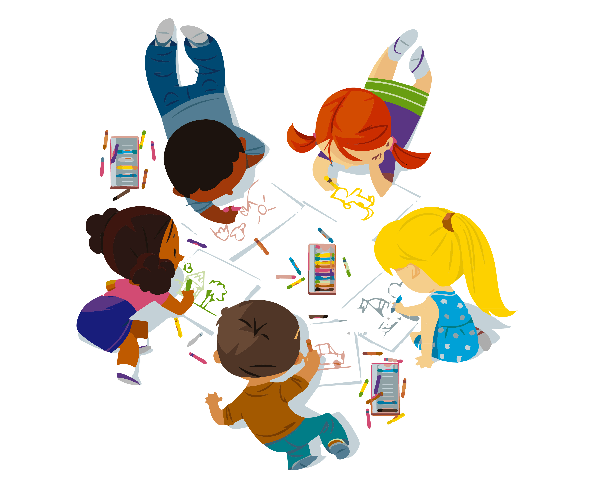

Doel

Samen leren wij meer
Besloten stuur- en rapportageomgeving
Schoolplan 2026-2029 van Brede School de Kersenboom. Hier beheer je ambities, planning, voortgang, zichtbare resultaten en rapportage richting inspectie, bestuur en MR.
De definitieve planning kan later per ambitie worden toegevoegd. Deze omgeving is alvast ingericht om schooljaren, acties, bewijs en rapportageteksten vast te leggen. De basis blijft de visie: kinderen leren op hun eigen niveau, alleen en samen, in een rijke leeromgeving waarin leren zichtbaar wordt.
Onze identiteit
Samen leren wij meer.
Leren gebeurt zelfstandig en met elkaar. Kinderen nemen verantwoordelijkheid, geven en ontvangen vertrouwen en respect, en krijgen ruimte om actief te leren in een uitdagende, ontwikkelingsgerichte omgeving.
Veiligheid
Duurzaamheid
Samen
Verantwoordelijkheid
Vakkundigheid
ambities in beeld
gemiddelde voortgang
risico's of stilstand
resultaten zichtbaar
Voortgang schoolplan 2026-2029
Samen leren wij meer, zichtbaar in voortgang.
Deze pagina geeft een actuele, korte weergave van alle ambities, resultaten en plannen binnen de vier Florente-thema's.

gemiddelde voortgang
op koers of afgerond
aandacht of risico
resultaten zichtbaar
Rapporteren
Werk per ambitie de stand van zaken bij.
Elke wijziging wordt lokaal opgeslagen in deze browser. De velden zijn ingericht op voortgang, planning, zichtbare resultaten, risico's en de uitleg die nodig is voor verantwoording.
Planning volgt later.
Per ambitie is alvast ruimte toegevoegd voor schooljaren, planningnotities en
bijstelling wanneer het conceptdocument definitief wordt.
Plannenbank
Een database voor alles waar aan gewerkt moet worden.
Deze eerste versie laat de plannen als stuurbare werkvoorraad zien. Later kan dit worden uitgebreid met eigenaren, deadlines, bijlagen, rollen en autorisaties.
Rapportgenerator